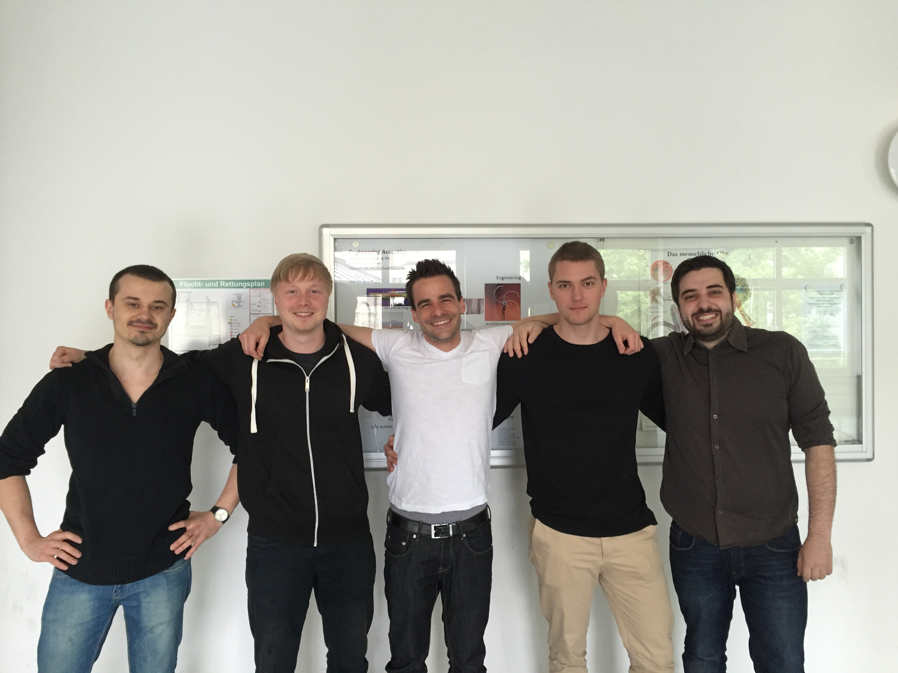

Das Team Elektronik und Software ist für die elektronischen Komponenten des Crawlers zuständig, sowie für die Software die für die Steuerung des Crawlers benötigt wird. Da dies ein sehr großes und Komplexes aufgabengebiet ist unterteilt sich die Gruppe in sechs verschiedene Teilbereiche.
Untergruppe GUI
Die GUI (engl. Graphical User Interface) soll dem Benutzer des Crawlers in Echtzeit (oder in einem noch akzeptablen Zeitverzug) das Bild der Crawler-Webcam übertragen, um so eine verbesserte Steuerbarkeit zu gewährleisten.
Des Weiteren sollen Zusatzinformationen, wie die Aktivität der Roboter-Komponenten und Informationen über den aktuellen Fahrstatus, wie Richtungsanzeige, Geschwindigkeit oder Akkustand, angezeigt werden.
Zunächst wurde eine GUI mit der Programiersprache Python unter Verwendung mehrerer Zusatzpackages (u.a. GTK, PyGTK und VideoCapture), entwickelt. Aufgrund der Notwendigkeit von zahlreichen Zusatzpaketen, Kompatibilitätsproblemen und daraus resultierendem eingeschränkten Funktionsumfang wurden zwei Folgeansätze als Alternative gewählt: LabVIEW und Qt (eine C++-Klassenbibliothek zur Programmierung einer Benutzeroberfläche).
Stand der Dinge/aktuelle Aufgaben:
Qt:
mehrere eigenständige TCP-Sockets, die auf Threads aufgeteilt, parallel arbeiten, damit ein gleichzeitiges Empfangen von drei Videostreams ermöglicht wird
Sensor-Daten empfangen und auswerten
Optimierung der Serverkommunikation
LabVIEW:
Profilverwaltung
TCP-Verbindungen realisiert
Sensor-Daten empfangen und auswerten
Verzögerungsfreies streamen


Untergruppe Sensorik
Die Sensorikgruppe wurde gegründet, um durch den Crawler zusätzliche Umgebungsinformationen zu erhalten. Zusätzlich soll durch Sensorinformationen wie z.B. Abstandswerte, die Bedienung des Crawlers über Visualisierungen auf der GUI vereinfacht werden.
Stand der Dinge:
Zur Implementierung der Sensoren ist ein Raspberry Pi 3 vorgesehen, der die Signale mehrerer Sensoren verarbeitet. Es wurden unter anderen Infrarot Abstands-, Temperatur- und Gassensoren implementiert.
Die Datenkommunikation mit dem Industrie-PC soll mittels ROS realisiert werden, deshalb werden momentan die bestehenden Programme auf Kompatibilität mit ROS überprüft und adaptiert.
Das Konzept der Sensorikgruppe sieht vor, dass zusätzliche Sensoren jederzeit eingebunden werden können.
Untergruppe Motorsteuerung
Die Untergruppe Motorsteuerung kümmert sich darum das der Crawler sich tatsächlich bewegt.
Die Konkrete Aufgabe besteht darin die Informationen vom Industrie-PC/ROS (dem „Gehirn“ des Crawlers) die Kommandos entgegenzunehmen und in für die Motoren verständliche Steuerbefehle und ihnen diese per CAN/CANopen mitzuteilen.
Dazu gehört zum einen die Programmierung von Microcontrollern (Rasberry PI und TinyCAN) und außerdem mussten wir uns viel mit den Motoren und ihren Eigenheiten auseinandersetzen. Der Crawler ist mit mehreren verschiedenen (durchaus starken) BLDC- und Schrittmotoren von der Firma Nanotec ausgestattet. Diese können auf verschiedenste Art angesprochen werden. Wir haben uns dazu entschlossen über das Protokoll CANopen mit ihnen zu kommunizieren.
Die wichtigste Aufgabe hierbei war es, mehrere Klassen in objektorientierter Sprache zu schreiben. Diese Klassen können untereinander Kommunizieren und CAN_Signale über ein TinyCAN-Modul auf den Bus legen oder empfangen, um diese dann zu verarbeiten und entsprechend auf Ereignisse zu reagieren.
Untergruppe Verkabelung & Hardware
Das Hauptaugenmerk unserer Gruppe liegt darin, eine geeignete Anordnung zu entwickeln, die eine Wartung und Montage aller in das Elektronikgehäuse zu verbauenden Hardwarekomponenten ermöglicht. Zudem werden Möglichkeiten erarbeitet, um das Gehäuse an den Crawler selbst zu integrieren.
Folgende Bauelemente werden zur Unterbringung in das Gehäuse berücksichtigt:
7 Motor Treiber Platinen
2 Raspberry Pi
1 Industrie PC
2 Arduino Uno
1 W Lan Router
1 Netzteil bzw. Batteriepack
div. kleine Platinen zur Ergänzung
Derzeitige Aufgaben:
Aktualisierung der Verkabelung
Einbau des neuen Gehäuses
Auslegung des Akkus
Aktualisierung der Verkabelungspläne
Zuletzt umgesetzte Umbauten:
Einbau eines Scharniers zur Öffnung einer Seitenwand
Elektronik-Halterungsmöglichkeit entwickelt und konstruiert
Elektronik-Halterungsmöglichkeit hergestellt durch ein 3D-Druckverfahren
Zukünftige Aufgaben:
Einbau neuer Systeme
Akkuauslegung überdenken
Untergruppe ROS
Das Robot Operating System (kurz: ROS) ist das Herzstück des Crawlers. Verteilt auf einen Industrie-PC und zwei Raspberry Pis mit Linux-Distributionen verknüpft es die einzelnen Peripheriegeräte und ermöglicht so einen komfortablen Datenaustausch.
Die Komponenten des ROS sind über Ethernet miteinander verbunden und kommunizieren mittels ROS-spezifischen Messages. Die Schnittstellen nach außen sind:
WLAN
CAN
I2C/SPI
Der modulare Aufbau unter ROS wird ermöglicht durch die sogenannten Nodes (Knoten). Nodes sind Programme, die in C++ oder auch in Python programmiert werden können. Alle Berechnungen werden über die Nodes durchgeführt und über einen Master (hier auf dem Industrie-PC) koordiniert.
Untergruppe Controller
Der zur Steuerung des Crawlers verwendete Controller ist via USB mit einem Laptop verbunden. Die Anbindung dieses Laptops an die ROS-Plattform erfolgt über eine Wireless-LAN Schnittstelle.
Die Daten des Controllers werden über ein Python-Programm in Form von Events ausgewertet und zwischengespeichert. Über eine TCP/IP-Verbindung werden die Daten dann zyklisch an den TCP/IP-Server der ROS-Plattform gesendet. Der Programmablauf wird mit Multi-Threading parallelisiert. Dadurch können die Controller-Events abgefragt und gleichzeitig Daten an den Crawler gesendet werden. Somit wird verhindert, dass der Programmablauf durch das Warten auf die Controller-Events blockiert wird.
Die Gruppe Controller wurde zum WS15/16 aufgelöst, da am Controller derzeit kein weiterer Verbesserungsbedarf besteht.